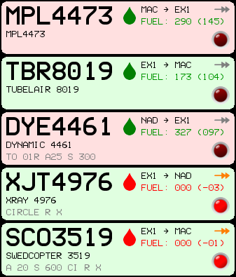

The game interface¶
All the interaction with the game happens through the command console. The game screen is organised in areas:
- radar screen (1)
- You can see here the aeroplanes, airports, beacons and gates that fall within the aerospace you are controlling.
- command console (2)
- Here you issue commands either to the game engine (for getting help, pausing, quitting...) or to aeroplanes (to alter they course or perform special operations).
- status bar (3)
- The status bar displays information on your radar, such as the range of it and the amount of space between radar markings.
- flight strips (4)
- Here you have a list of planes currently under your control, with some data which is not available on the main radar screen.
- airport maps (5)
- Here you have a detailed map of the airports located in your aerospace: airports are also visible on radar screen, but in this part of the game interface they are big enough for you to identify individual runways.
- score (6)
- The overall score of the current game is displayed here.
The radar screen¶

The radar screen gives you an overview of the situation in the aerospace you are controlling. The typical elements you will find in it are:
- Radar targets (aeroplanes), with their flight number, altitude and speed indicated in the label next to them.
- Airports, identified by their IATA code.
- Gates, which are the entry and exit points for the aeroplanes in the aerospace.
- Beacons, which are points whose location is known to aeroplane pilots, and thus can be used to direct aeroplanes (e.g.: DLH1234 HEAD NDB1 to direct the Lufthansa flight #1234 towards the beacon marked NDB1 on the radar).
The command console¶
The command console is the area you use to control the game. In ATC-NG all commands (whether they are game commands like QUIT or plane commands like HEADING) are issued through the console.
The bottom, larger line is the interactive prompt where you compose the command (press Enter to attempt command execution). The smaller lines above that show the history of the past commands, and what happened once executed.
The status bar¶
The status bar report some scale information on your radar settings. These are:
- The radar range, defined as the distance between the location of your radar (the centre of the radar screen) and the edge of the aerospace. Note that however your radar will be able to pick up signal in the four corner on the aerospace [which are beyond such range] too.
- The distance between radar markings, defined as the distance between any radar marking on screen and the one closest to it. Note that the spacing of radar markings and their aspect can be altered via specific settings.
- How long have you been playing the current scenario, yes... you truly wasted that much time!
The flight strips¶
The flight strips show data about each flight that might not be available directly on the main radar screen. The purpose of the flight progress strips is that of helping the air traffic controller (that’s you!) to establish a routine for keeping track of all the flight. Read more on the flight progress strip page
The airport maps¶
The main function of the airport maps is to give you a detailed view of the available runways, so that you can decide which ones to use for takeoffs and landings.
The score¶
The score is updated live throughout the game. Please refer to the scoring page for more information on how score is calculated.